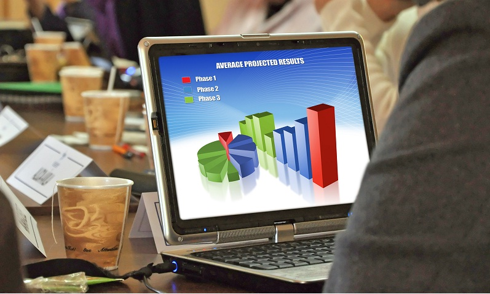

General Body Meeting
Our general body meeting takes place every Wednesday at 5:30pm in Olin Hall 216.

Current Events
Resume Workshop with AKPsi
Wednesday, November 16
Members of the business fraternity Alpha Kappa Psi join SEBA to give a presentation on making your resume look professional.
Afterwards, members are able to get their resumes critiqued and receive personalized advice and suggestions.
What is Networking?
Wednesday, November 2
A great event for all students looking for jobs and internships this upcoming summer.
Let SEBA help you discern how to effectively network with company representatives at info sessions, career fairs, and interviews, and learn about some of the DOs and DON'Ts.
Externships and Cover Letters
Wednesday, October 19
Life at Cornell is busy, and there are a lot of opportunities out there, but how do you find which ones are right for you?
Having a solid plan and equipping yourselves with tools like well-written cover letters are a definite place to start.
Interview Strategies
Wednesday, September 28
Every interview is different, but there are some things that everyone should know heading into the big day.
Learn some proved interview strategies and hear some stories from SEBA officers, and get a chance to practice some brain teasers.